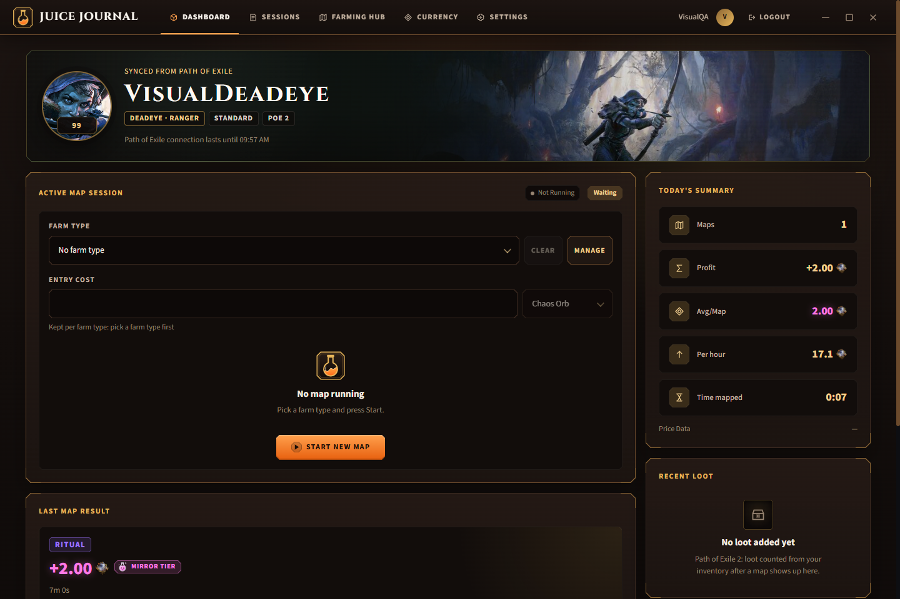

Maps, timed by themselves
The app reads the game's Client.txt log. A map starts when you enter it and ends when you leave, with the time you spent in it.
Path of Exile 1 and 2 · Windows · free and open source
Juice Journal follows your map runs from the game's log file. In Path of Exile 2 it also counts the currency your inventory gained (experimental) and tells you what each map and each farm type really paid. No ads, no account of its own, and your journal stays on your PC.
Pre-release. The installer is about 120 MB.

Every map gets a verdict
A map's profit gets a tier in the colour of an item rarity. The steps are measured in Divine Orbs, so they hold from league to league. The quiet tiers stay quiet; the flasks only show up for the maps you will talk about.
What it does
The app reads the game's Client.txt log. A map starts when you enter it and ends when you leave, with the time you spent in it.
In Path of Exile 2, open your inventory before and after a map and the app counts the priced stackable items you gained, with poe.ninja prices. Gear is not counted. An item it is not sure of is left for you to add by hand, never guessed.
Tag runs as Breach, Ritual, Expedition or a farm type of your own, and set what a map costs you to enter. The cost comes off the map's profit, so you see which farm is worth your next map.
Optional, and off until you turn it on. A card asks for the farm type when you enter a map and shows the result when the map ends. It takes the keyboard only while you type an entry cost on it.
New to it?
In Path of Exile 2 the app leads a new player through five steps, on the Dashboard and on the overlay, until one map's loot has been counted.
Step 1 of 5
Start Path of Exile and enter the game. The app finds it on its own.
Step 2 of 5
Enter the game with the character you play. The app loads prices and item pictures; the first time takes a minute or two.
Step 3 of 5
Go to your hideout. Maps are counted from there. Open your inventory once. Press I, so your next map counts.
Step 4 of 5
Run a map at your own pace, with no need to stop for loot. Its loot is counted when you are back in your hideout.
Step 5 of 5
Go back to your hideout and open your inventory. The map's loot is counted from it. Every map works the same way: open your inventory in your hideout before it and after it.
Counting loot from your inventory is experimental and works in Path of Exile 2, with a game window 1440 pixels tall. Path of Exile 1: maps and time are tracked on their own. Loot is added by hand, in Sessions.
How tracking works lists what the app reads, and the README lists every host it talks to.
The app checks for new versions itself, and installs one only if its signature matches the key built into the app.